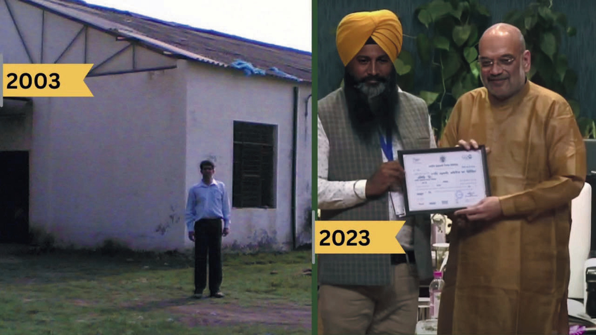

Our Origin
UAMMCL – A Visionary Initiative by Unati
Originating from the lower Shivalik foothills of Punjab’s Kandi region, Unati emerged as a cooperative in 2003, driven by a mission to uplift the local community’s welfare through health, nutrition, and income-generating activities. With backing from the Department of Biotechnology, Government of India, and the Punjab State Council for Science & Technology, Government of Punjab, it embodies the spirit of community empowerment, resilience, and collective strength.
The details are available here
Unati Cooperative is a vibrant force that harmonizes science, nature, and the ethos of cooperation to foster a thriving and sustainable community. Our mission extends beyond mere commerce; we are dedicated to revitalizing human existence. Guided by the vision of the Government of India, we lead various initiatives such as women’s empowerment, bio-resource management, green missions, bamboo initiatives, and many more, shaping a brighter & sustainable future for all.
Driven by an unwavering commitment to excellence, dependability, and pioneering spirit, Unati endeavors to empower women economically while spearheading skill development initiatives. With a membership exceeding 1200 individuals, our cooperative comprises experts in Biotechnology, Food Sciences, Agronomy, Soil Sciences, and Agri-Management. Proudly recognized as a certified MSME Zed unit, Unati diligently aligns with diverse government missions, standing as a beacon of progress and innovation.
Our product range, spanning from naturally fermented vinegars to herbal nutraceuticals and traditional Indian foods, reflects our dedication to natural well-being and exceptional quality. Under the esteemed labels Aasnaa and Unati, our offerings encapsulate the essence of ‘Swadeshi’, highlighting local expertise and bio resources.
![]()
Jyoti Saroop
Founder & Director
“As we progress, it is essential for society to approach those who are marginalized with kindness and understanding, recognizing them as equals.”
From the outset, Deep has held the conviction that the most talented and capable individuals must work alongside society’s most vulnerable, empowering them to find their strength and voice. He has embodied this philosophy in his own journey.
Read More...
“For me, UAMMCL represents a deeply held belief that resonates on a personal level.”
Our Team
We strive to enhance the capacity of rural communities to achieve a sustainable livelihood. Our structure consists of field-based groups, each comprising three to five dynamic young professionals, led by an experienced mid-career coordinator and supported by a team of expert integrators. Hundreds of young professionals are actively engaged in remote villages across India, working closely with local communities in some of the most underprivileged states.
They come from diverse academic backgrounds, including management, engineering, agriculture, and social sciences, having been recruited from top universities. A significant portion of the families we support belong to marginalized communities.